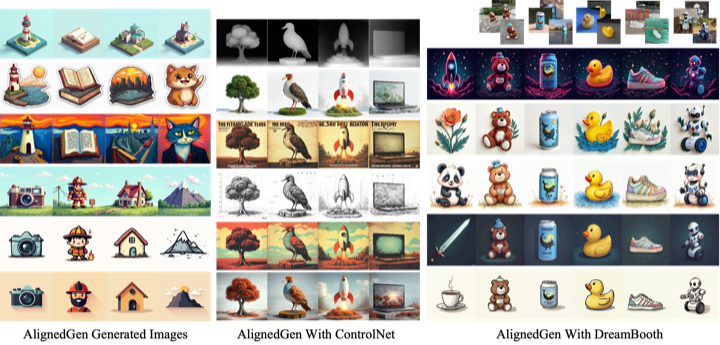
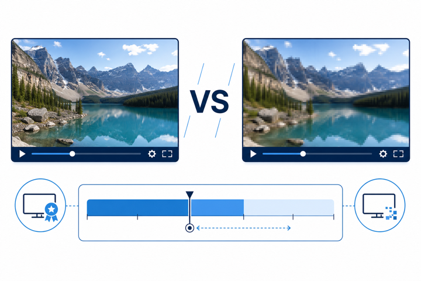
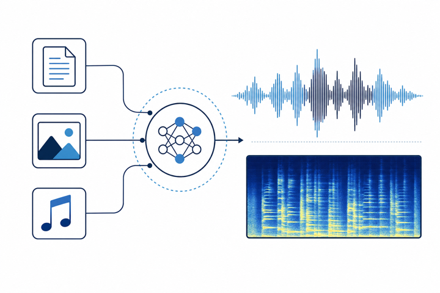
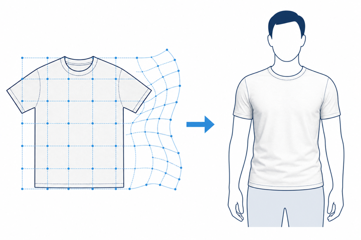

张杰宣
I am a Master student at Peking University, advised by Prof. Jian Zhang of the VILLA Lab. Prior to that, I received my B.Eng. in 2024 from Beihang University, Shenyuan Honor College, majoring in Software Engineering.
I am a Master student at Peking University, advised by Prof. Jian Zhang of the VILLA Lab. Prior to that, I received my B.Eng. in 2024 from Beihang University, Shenyuan Honor College, majoring in Software Engineering.
* Equal contribution. Full list on Google Scholar.



